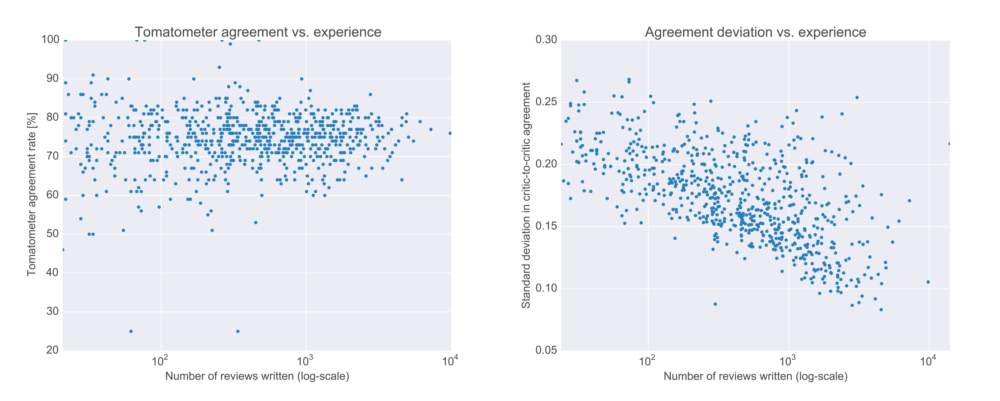
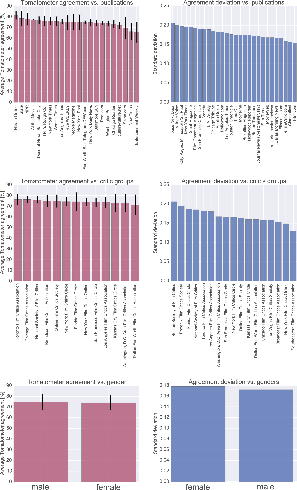
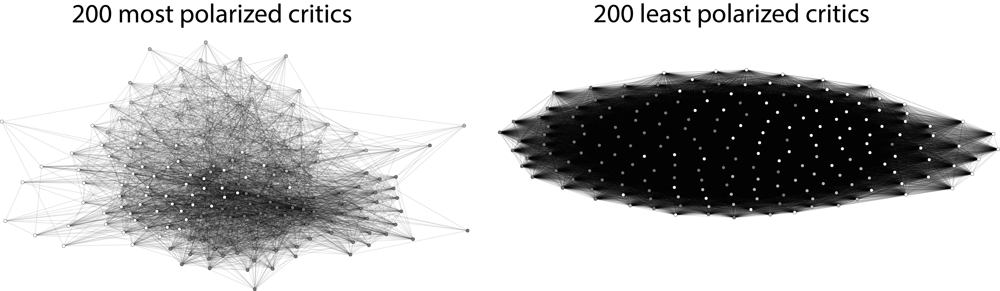
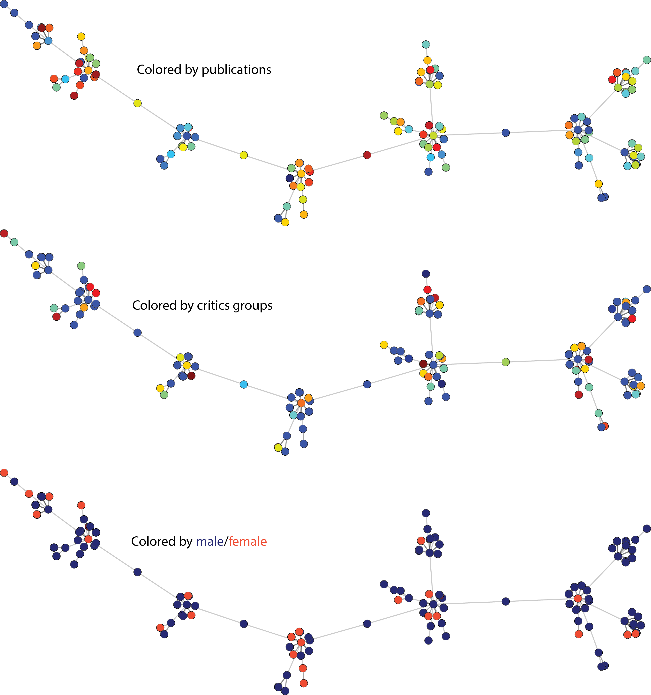
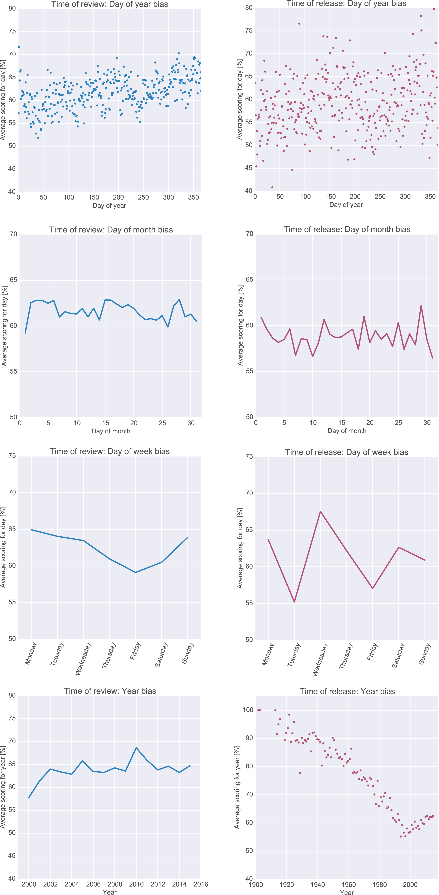
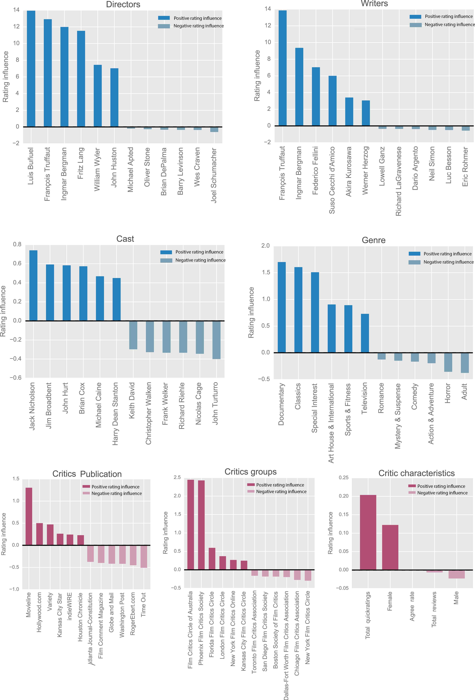

About
We scraped all the data off Rotten Tomatoes just to prove that movie critics are biased. It's academic...
A common sacrifice in the pursuit of maximizing profits in the film industry is often the ever-so-intangible resource quality. Movie critics, therefore, constitute an increasingly important faction of actors in this field. This study seeks to test their credibility and understand just how predictable they are. We went about doing this the hard way. No API's or fast-food McDatasets, just old fashion web scraping. We took everything we could get, which turned out to be a rather wholesome meal consisting of 947 critics, 17275 movies and 301409 reviews. The data will not be made available because we can't afford lawyers.
Critic Agreement Patterns
It's a well known fact that critics like to disagree, without disagreeing too much. But why, how, how much? Who are the critics that disagree the most, and who are their counterparts? Read on and you will know the (statistical) truth.
Agreement vs. Experience
These plots show how experience influences agreement. More seasoned critics clearly tend to review movies more similar than newcommers do, which is arguable not so surprising. The left plot shows Tomatometer agreement rate vs. experience, measured in number of reviews written, and needs little explanation if your are familiar with this metric. The right plot, on the other hand, is a little more technically advanced, but can be interpreted simply as polarization vs. experience, in that a high value means, for a given critic, that he or she agrees a lot with some, but disagrees just as much with others. From this, it is clear that the veterans know just how to agree with everyone the same.
Agreement vs. Affiliations
Before you start reading, keep in mind that red means Tomatometer agreement average, and blue means polarization. Got it? Great!
The left column shows how Tomatometer agreement is distributed over publications, critics groups and genders. The right column shows the exact same thing, but for polarization. Using what we learned in the previous plots, critics from the New York and Southeastern critics societies seem much more experienced than critics from Boston and Pheonix. At the same time we see little difference in Tomatometer agreement averages between the genders, but some in their level of polarization. This could have many explainations, but since it is no secret that there are signifiantly more men in the critics community (76.7% from our estimates), the interpretation could be that the minority of women are slightly more opinionated in an effort to stand out.
Agreement Networks
We now take a look at probably the most intuitive way of understanding critic agreement patterns - networks!
Community Detection
First we put the 200 most polarized critics into the same network, add weighted edges between them to signify their pair wise level of agreement, and color label the emerging clusters. We then do the same thing for the 200 least polarized critics. Just to make sure we're on to something.
As it turns out the algorithm does find something in the polarized network. It's not easy to see, but if you take a careful look there are white nodes and gray nodes in opposing regions of the network symbolizing a degree of clustering. It makes an effort too, in the less polarized network, but it's clear to see that there is next to no clustering inherent to the veterans.
Maximum Spanning Tree in Polarized Community
The network we just produced turned out far more complex than we wanted it to be. In an effort to simplify it, we take a maximum spanning tree in this network in order to only retain connections between the most strongly connected critics.

What you just looked at is in fact the same tree three times, but with different color coding. We colored the nodes with respect to different critic characteristics, because we hoped to find a big red cluster of females, or dudes from Toronto in there, but as you can see, we had no luck. Turns out critics do not agree with each other more just because they frequent similar public toilets or pronounce the word "about" funny.
Critic Bias Patterns
We now dig deeper into the data and try to extract some generic reasons for bias. We'll start with the least offensive.
Time Bias
Again, a heads up: red now signifies time of movie release, while blue is time of review. These figures compare review scoring patterns as functions of time of release and time of review.

Each comparison is interesting in its own right. The top figure shows that movie scores increase as the year progresses, and that this score is much more correlated with the time of review than the time of release, which is a downright strange. Why is it that critics give far more positive reviews around Christmas time than in January? Another funny observation is that critics will review a movie ~6% more positive on Mondays than on Fridays, with a steady decrease inbetween. Or that movies coming out on a Wednedsay receives on average over 13% higher scores than those released on Fridays and Tuesdays. Finally, probably the most interesting figure of them all, the bottom right plot that shows how older movies receive better scores, and that this trend changes drastically around 1998 (which is also the year of RT's emergence). We thought hard about this, and came up with the following interpretation: Older movies are reviewed more out of choice than out of need, or in other words - why would anyone review an old and bad movie? The change in trend around 1998 requires a different interpretation. We believe it can have something to do with the emergence of Internet based reviewing, and the increasing degree of selectivity that comes with not having a bossy editor.
Feature Bias
This part compares critics with viewers, and investigates some of the features in a film that attracts critics. This takes up a lot of space, so in order to save you miles of scrolling we made some boxes that you should click instead.
Production Company
Genres
MPAA Ratings
Starting from the left, we see that the production company that made a film has great influence on some critics (little green dots) and little influence on others, but no significant influence on the average critic. A willing eye will maybe see a tendency for the critics to lean towards the less popular production companies, which is a tempting conclusion to make, but judging only from the network this is beyond (statistically) safe. Looking at the bar chart, however, we see that the critics are particularly happy with companies such as "Criterion Collection" and "United Artists", while block buster makers "20th Century Fox" and "New Line Cinema" are less popular with this group.
The genre network provides little information too, and here it is simply more entertaining to look at the bar chart where we e.g. see that horror is the least like genre, period. Faith and Spirituality is not highly enjoyed by critics, but viewers seem very fond of this genre. Many more funny observations such as this can be made. Knock yourself out!
The final feature statistic showing advisory rating bias is quite interesting. Here we see that critics are not very happy with R, PG-13 or PG rated films while, Unrated, G and PG-17 rated films are very liked. Some ambiguity arises in that the network indicates that G rating is far more liked than R rating when the bar chart shows that this difference is very small, but don't worry - this is simply due to the construction of the network.
Predictive Analysis
Congratulations on making it all the way to the final section! We are now about to embark upon the most fun part of the analysis, where we point out mind bending facts like that having Nicolas Cage in your movie is generally as bad idea.
Predictive Features
To ease the distinction between things red now symbolises features that are characteristic to critics, while blue signifies features that are characteristic to movies. The following charts illustrate what features in both of these what features are typical to both positively and negatively reviewed movies.
We'll keep it short with the comments on these figures, and just say that hiring Jack Nicholson is never a bad idea. But we already knew that, right.
Classification Model
On a final note we reiterate one important purpose of this analysis, namely to understand how predictable critics are. To get a number that says something about this we trained a Random Forest classification model, i.e. an algorithm that takes a movie and a critic and predict whether that critic will like the movie or not. Testing the model against unseen data over 10 folds proved it to make correct predictions 68% of the time, comparing rather poorly to a 62% baseline positivity rate in all reviews in the data set, i.e. ~6% better than just guessing "positive" for every review.
Conclusion
And this concludes our study! Critics are not that easy to predict at all. Sure they have their preferences and tendencies but they are human after all, and overall our analysis finds little to suspect that they are unfair and wrongly biased.